Тема, мета і постановка задачі
Тема: ПЕРЕВАНТАЖЕННЯ УНАРНИХ, БІНАРНИХ, ЛОГІЧНИХ ОПЕРАТОРІВ, ОПЕРАТОРІВ ПОРІВНЯННЯ.
Мета: придбати практичні навички роботи реалізації методів перевантаження унарних, бінарних, логічних операторів, операторів порівняння.
Постановка задачі:
- Доповнити програмну реалізацію класів методами для перевантаження унарних, бінарних, логічних операторів, операторів порівняння.
- Протестувати програму. Зробити висновки.
UML-діаграма
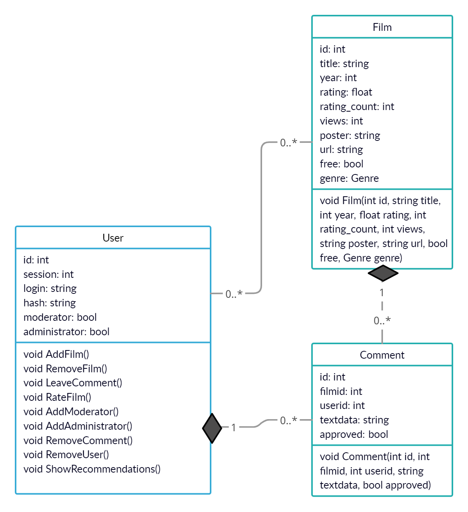Файлова структура
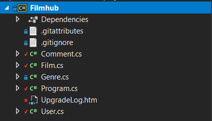Перевантаження унарних операторів
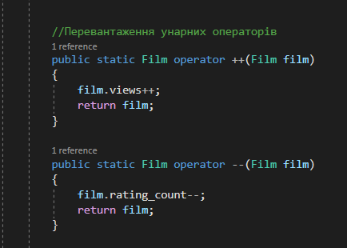 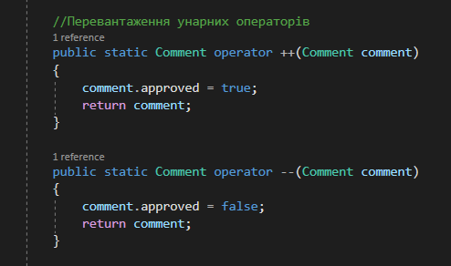Перевантаження бінарних операторів
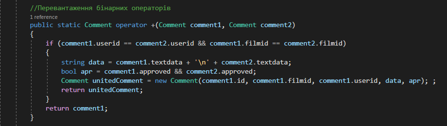Перевантаження логічних операторів
 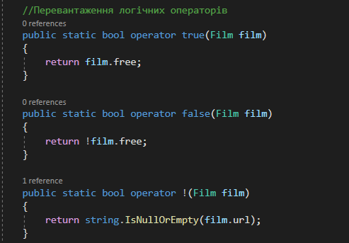
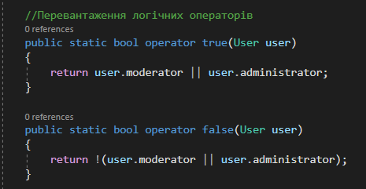
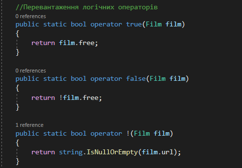
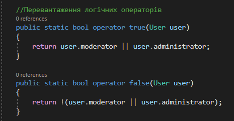
Перевантаження порівняльних операторів
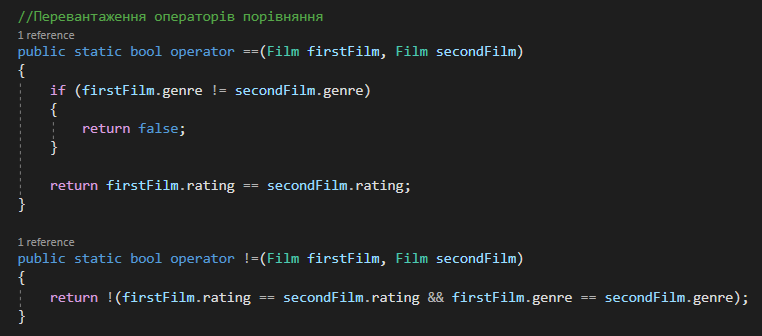Результат роботи
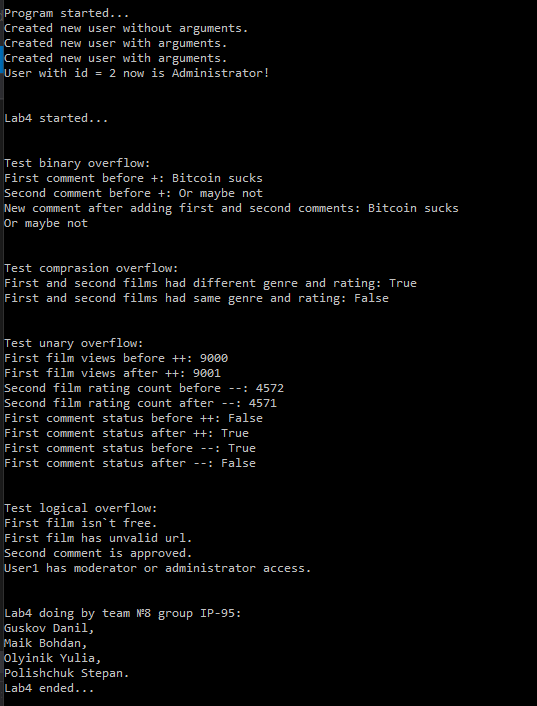Посилання на проект
https://github.com/UniversityTeam/filmhub-netВиконуваний файл
ЗавантажитиВисновки
Основною метою лабораторної роботи було вивчення та реалізація перевантаження операторів. Завдяки цьому ми можемо прописувати логіку для тих чи інших операторів для нашого класу.